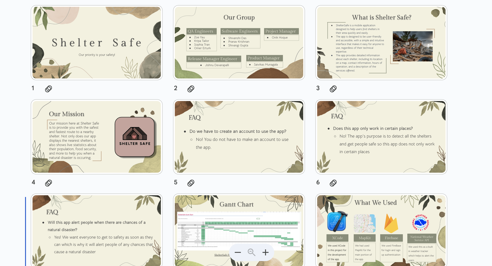
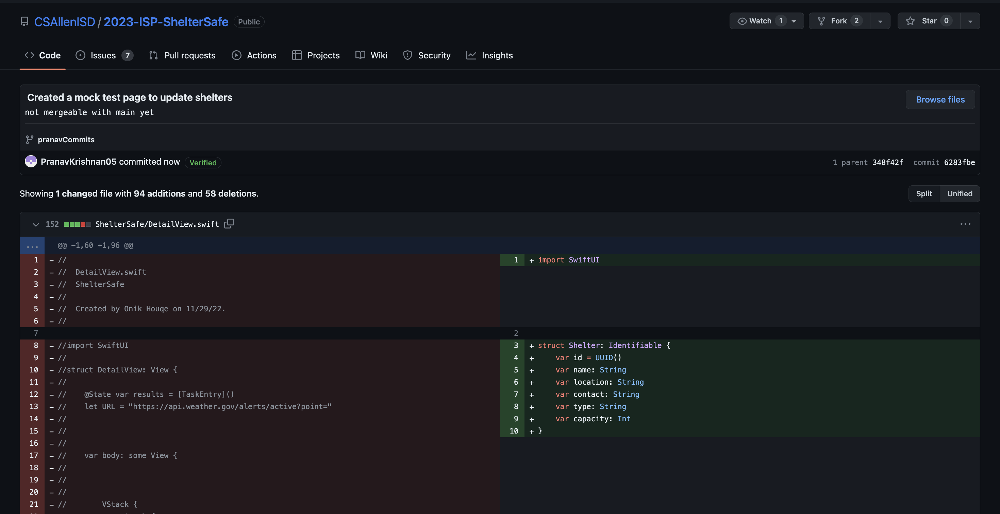
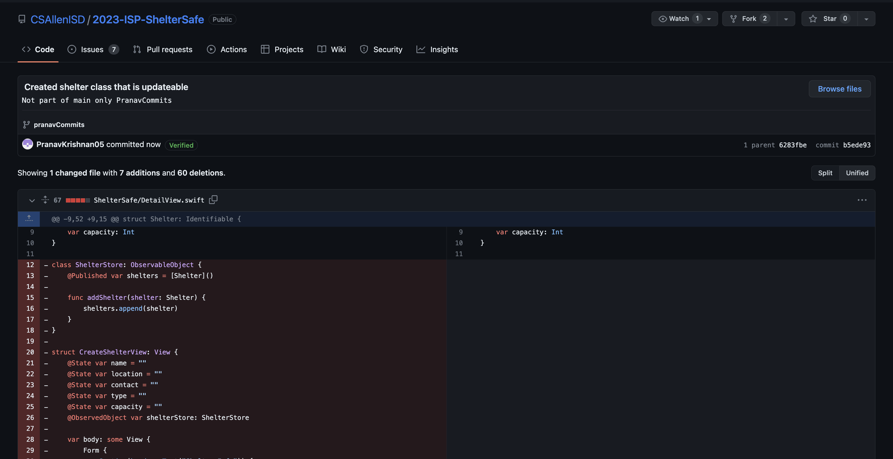
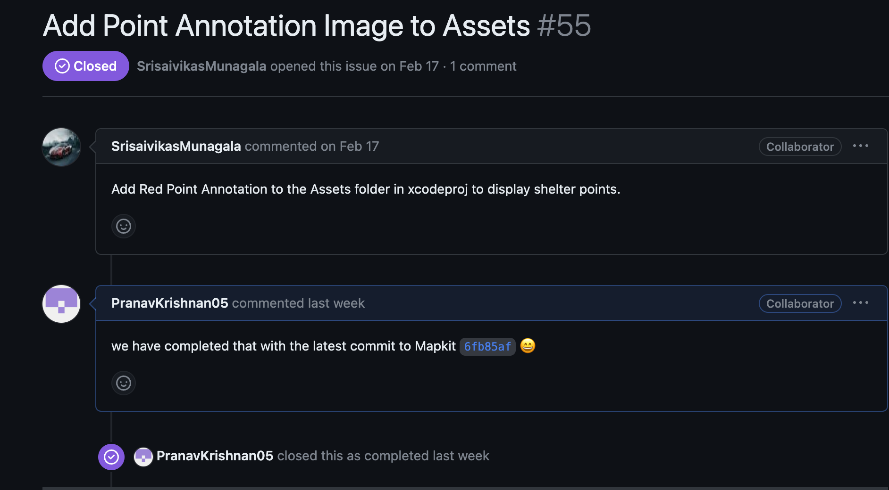
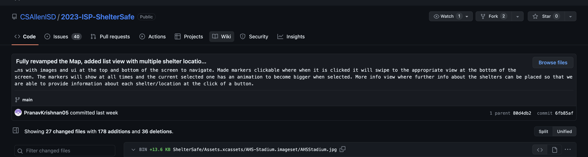
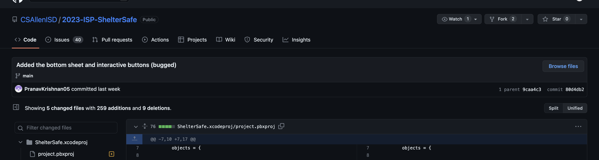

Create Presentation for final isp presentation next week so that we can show all that we have done
We were able to create the presentation and one section presented and it went very smoothly and the audience semed to unserstand
We have completed testing and all that we have is working properly
The slideshow for our presentation!
Last week we didnt make much progress as a team due to AP exams starting and this week we have ap exams so I am just trying to crate a page to change shelters, i am somewhat finished with it but it isnt done. Coupled with the extensive missions we have due I dont expect much progress this week. I hope to be able to finish the shelter page this week and hopefuly get the qa team to test it.
I was able to mock up 2 of the pages, im awaiting QA Aprroval so i can implement them on the final project. We have mutliple teams working on this shelter page so im not sure if my changes will be neccicary but they are on my brand pranavCommits nonetheless. There were a lot of technical issues I faced regarding implementation of this page into our app, im getting help with that right now but that should be a part of next weeks final touches.
I havent started testing the page but I have contacted QA and they are going to get on it as soon as possible with the deadline fast approaching
This mock test page is just a page in which shelters can be created by admins, Admin login is part of another teams tasks but essencially whats happening is the admin bool is true we will allow access to this page that can directy update the shelter class and created shelters on the map for view
This updateable shelter class was first devloped by another memeber of our team, i just amde an alternate vesion that might be easier to implement and create that connection between the map and the sheler creation page.
Last week we were able to completely finish the mapkit map and add nice modular displays of each shelter with mapkit instead of our old map that used map box. This introcuded issue with pulling the json file and using this to popluate our markers on the map. We are also adding screen to edit shelter that only shows up once a user with admin permissions log in.(similaar to last week with one extra goal)
I was able to complete some of the pages this week but we are still lacking on some of the functionality. This also still needs to be tested by our qas
Closed another Issue with a comment that was fixed my large commit this week- 17

Created an issue that was created by commit to mapkit branch that needs to be resolved- 18
Created an issue for combining the json file idea proposed by our Project manager with what I added in my commit that we are currently using for holding the location data (I added multiple images so that our members without macs could still view what I was talking about without having to run the code on the school macs- 19
Last week we were able to completely finish the mapkit map and add nice modular displays of each shelter with mapkit instead of our old map that used map box. This introcuded issue with pulling the json file and using this to popluate our markers on the map.
Github commit - 14, My largest Commit yet, I Fully revamped the Map, added images, markers a whole new list biew and more info panel, also added better animations/transtions 
Added the bottom sheet and interactive buttons- 20 
In the latest commit to Mapkit Commits we created LocationsViewModel as the place for all of our info about shelters images and details to be held but we need to make this compatible with the json file through Json parsing or possibly just changing the way we want to organize the shelters to the LocationsViewModel itself instead of the json all together. We also struggled with With the new implementation of Mapkit we are having issues with displaying the current user location as the old command uiView.showsUserLocation = true isnt working now.
Our team has had a very busy week this week school wise so it was mostly only a few of us working on the project. others didnt make time to work on our isp
We have gotten over the hump where we would argue over decisions but we are working like a well oiled machine with minimal interpersonal issues
Github commit - 12
Github Issue - 11
Github commit - 10
Today, we encountered a technical challenge where implementing UIKit is necessary for the app to become more interactive and allow users to click on the markers. We are brainstorming on how to integrate this into our app without affecting its overall functionality.
This week, we faced some scheduling challenges due to our teacher, Mr. Ben, being out on Wednesday and Thursday. Fortunately, we were able to use the time to catch up on our tasks and work independently. Additionally, we had Friday off due to a school holiday, giving us some extra time to work on the project.
The team has been working well together, and there havent been any significant conflicts this week. Were consistently communicating and collaborating, and were making great progress towards our shared goal of completing the Swift UI app with MapKit.
Github commit - 9: allowed to receive tap events on annotations conforming to Annotation InteractionDelegate (and setting yourself as the delegate on the manager).
Github Issue - 8 Add Interactive annotations to the map using point with the MapView’s AnnotationOrchestrator
Github commit - 7 Refactor code to enable clickable and movable annotation markers with enhanced user interactivity and engagement
UIKit implementation is required for us to create more interactivity to this app through allowing for us to click the markers
None this week
No significant conflicts we are working together as a team pretty well now
Github commit - 6(Massive commit took the whole week)
Github Merge - 5
Github commit - 4
Net RC still not working. We need a file in mac home directory with API key and it is dificult to give the key to all the memebers.
Mr ben is absent and some of our members are attending the cyber security competition in maryland.
none this week
Github commit - 3: ReProtected safe area after the merging issues with main (not alot of code in this one but it allows for more surface area in our map and it solved an issue that were created.
Github Issue - 2
Github commit - 1, Fixed Marker icon image, sizing & placement so it is viewable and gives us an idea of what the shelter icons will look like when are able to have live updates to the map.
map box functionality isnt up to qa and release managers standards
Spring break halted progress to an extent because we all needed a short refresh
There was a lot of disagreemant on roles so we decided to have a team meeting to decide what roles each person would get and who would take up multiple postitons. There was also ome disagreement in the UIs apperence but we came to an agreement on what the color scheme would be and how the app would be layed out.
Net RC not working. We need a file in mac home directory with API key and it is dificult to give the key to all the memebers.
We were expecting to be able to work in class but we need to do some SQL introductions with Mr.Ben.
Due to a conflict with my best freind who is part of the team we were not able to work together initialy but our project manager was able to get us on task working together.
Xcode did not work on the school computers so out members could not work on the project unless they had their own mac which only 4 of us did. The map would not fit in our tab view limiting the functionality of out product at the moment. We are also wroking on the UI for the app which doesnt have functional buttons but we have multiple tabs.
Due to our team being split into multiple classes across A and B days we need to find a way for us to work collaboratively outside of school to complete our ISP in time and have a functional product. We had a team meeting and out Project manager wasnt able to attend the meeting and we needed to reschedule it for next week.
There was a lot of disagreemant on roles so we decided to have a team meeting to decide what roles each person would get and who would take up multiple postitons. There was also some disagreement in the UIs apperence but we came to an agreement on what the color scheme would be and how the app would be layed out.
Cant pull current loction to use for JSON file that we use for getting weather disaters near us.
We all had only 3 days this week so we needed to work at home on discord
With merge error we all got I at one of our team members so we ensure that he would be able to work in out own branches and then merge that with main
Map box camera view didnt work but this issue was resolved and we are now able have some functionality.
We all had a lot of tests so we needed to work at home on discord
We were able to come together and assign all the roles and figure out tasks for each member
WHile using map box the camera view does not auto move to current location and the user has to scroll around the earth till they see the blue marker signialing their location. The readMe also got destroyed because of some packages so we had to remake it.
Snow days from Tues-Friday, no time to work colaberativly in class on the isp, we need to use discord to call and work on the isp together.
We had an argument about everyone not doing work so we decided to change the rolls up a bit to fix this.
Net RC still not working. Project manager had a busy week and couldnt distribute the API Key to all of our team members. Luckily we were able to figure out how to use gps location for a map.
SQL learning/ quiz took time away from in class colaberation, we overcame thi by having discord calls to work after school when we had free time.
We argued over what the most viable product would be up until friday then we came to an agreement so we could still carry on working without this argument inhibiting our progress.
Net RC not working. We need a file in mac home directory with API key and it is dificult to give the key to all the memebers.
We were expecting to be able to work in class but we need to do some SQL introductions with Mr.Ben.
Due to a conflict with my best freind who is part of the team we were not able to work together initialy but our project manager was able to get us on task working together.
Xcode did not work on the school computers so out members could not work on the project unless they had their own mac which only 4 of us did. The map would not fit in our tab view limiting the functionality of out product at the moment. We are also wroking on the UI for the app which doesnt have functional buttons but we have multiple tabs.
Due to our team being split into multiple classes across A and B days we need to find a way for us to work collaboratively outside of school to complete our ISP in time and have a functional product. We had a team meeting and out Project manager wasnt able to attend the meeting and we needed to reschedule it for next week.
There was a lot of disagreemant on roles so we decided to have a team meeting to decide what roles each person would get and who would take up multiple postitons. There was also some disagreement in the UIs apperence but we came to an agreement on what the color scheme would be and how the app would be layed out.
None
Due to our team being split into multiple classes across A and B days we need to find a way for us to work collaboratively outside of school to complete our ISP in time and have a functional product.
None
A software development engineer is a software engineer who is in charge of creating a particular software system or product. This could entail working with a group of other software engineers and developers to guarantee the product is created quickly and effectively, as well as designing, coding, testing, and debugging software. I would be a somewhat suitable member for this role but there are other teammates I have on our team that are more efficient and would create a better final product than I could as a Software Engineer.
A QA engineer, or quality assurance engineer, is responsible for testing and ensuring that a software product is of an exceptional quality and meets with the guidelines and criteria provided by the client and the development team. This could require designing and running test cases, as well as analyzing and presenting the outcomes of those tests. I would be quite suitable for this role because in my personal projects i ensure they are to the highest quality so this role would align with my values and how I work on projects.
A project manager is in charge of organizing, directing, and planning the creation of a particular software project. This could involve identifying the projects goals and objectives with a team of developers and other stakeholders, developing a project plan, and making sure the project and its members stay on track and the projects stays within the budget.I believe I would also be suitable for this role because I have experience in leading projects and managing people and I find that as something I could do efficiently and at a high level.
A product manager is responsible for identifying and pushing the strategy and vision for a specific product or product line. This could entail gathering and analyzing customer input, performing market research, and collaborating with a group of developers to define and rank features and functionalities. I believe I would not be suitable for this role because I have no prior experience in gathering and analyzing customer research or performing research so I dont think I would be a good fit for this role.
A release engineer is in charge of coordinating and managing the release of software applications to production environments. This could entail establishing and maintaining release processes and procedures, collaborating with other teams to plan and carry out the release, and working with development and QA teams to make sure the program is prepared for release. I would be a good fit for this role because I am good at communicating with people and working with others internally to guarantee a smooth and successful release